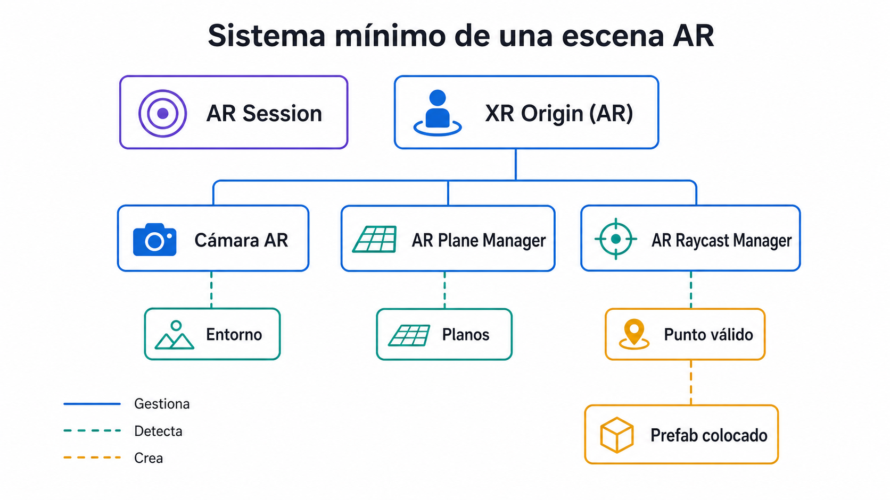
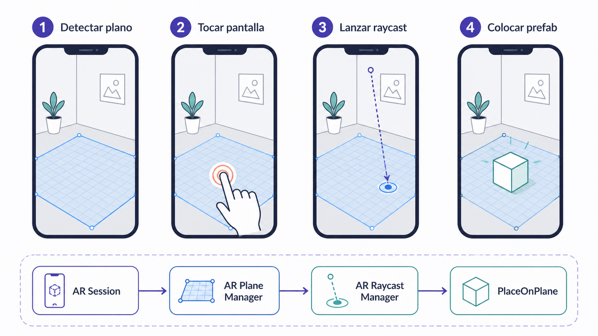
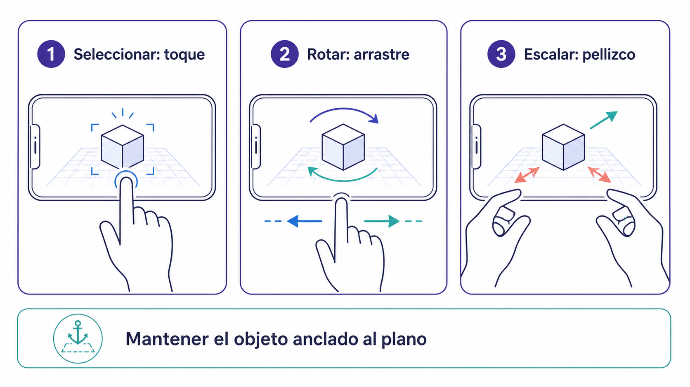

Realidad aumentada
Añade elementos digitales al espacio físico visto a través de una cámara. El usuario verá el entorno real desde el móvil y colocará objetos virtuales sobre superficies detectadas.
Construir un prototipo AR funcional capaz de detectar planos y colocar y manipular objetos sobre ellos.
En este cuarto laboratorio se introduce el desarrollo de experiencias de realidad aumentada con Unity. A diferencia de los laboratorios anteriores, donde el usuario se movía dentro de una escena virtual, aquí el espacio físico real se convierte en parte activa de la experiencia. El alumnado creará una escena AR capaz de detectar superficies reales mediante la cámara del dispositivo móvil. Después, podrá colocar un objeto virtual sobre un plano detectado, rotarlo y escalarlo mediante gestos táctiles. La práctica se centra en AR Foundation, ARCore XR Plugin, AR Plane Manager, AR Raycast Manager y scripts básicos de interacción táctil.
Añade elementos digitales al espacio físico visto a través de una cámara. El usuario verá el entorno real desde el móvil y colocará objetos virtuales sobre superficies detectadas.
Paquete de Unity que permite desarrollar aplicaciones AR multiplataforma. Capa común para trabajar con ARCore (Android) y ARKit (iOS).
Paquete específico que permite que Unity use las capacidades AR de dispositivos Android compatibles con ARCore.
Objeto que controla el ciclo de vida de la experiencia AR: inicio, actualización y estado de la sesión.
Conecta el mundo físico detectado por el dispositivo con el sistema de coordenadas de Unity. Incluye la cámara AR.
Detecta superficies reales (suelos, mesas, paredes) y genera representaciones de esos planos dentro de la escena Unity.
Permite lanzar rayos desde la pantalla hacia el entorno AR para detectar dónde toca el usuario sobre un plano real.
Objeto virtual preparado para ser instanciado sobre una superficie detectada.
Acciones con uno o dos dedos sobre la pantalla. En este lab se usan para rotar y escalar el objeto colocado.
Realizar después de crear o duplicar el proyecto AR y antes de configurar AR Session. Android es el recorrido principal de esta práctica; iPhone/iPad utiliza la alternativa ARKit.
| Paquete | Identificador | Comprobación |
|---|---|---|
| AR Foundation | com.unity.xr.arfoundation | Obligatorio para esta práctica. |
| Google ARCore XR Plugin | com.unity.xr.arcore | Solo si se trabaja con Android. |
| Apple ARKit XR Plugin | com.unity.xr.arkit | Solo si se trabaja con iPhone/iPad. |
Completar Preparación del Proyecto para AR (AR Foundation). Instalar únicamente los paquetes ausentes. Continuar con ARCore para Android o con la alternativa ARKit para iPhone/iPad descrita en ese bloque.

// Importa los tipos y APIs utilizados por este script.
using System.Collections.Generic;
using UnityEngine;
using UnityEngine.XR.ARFoundation;
using UnityEngine.XR.ARSubsystems;
using UnityEngine.InputSystem.EnhancedTouch;
using Touch = UnityEngine.InputSystem.EnhancedTouch.Touch;
using TouchPhase = UnityEngine.InputSystem.TouchPhase;
// Coloca o mueve un prefab sobre un plano detectado en AR.
public class PlaceOnPlane : MonoBehaviour
{
[Header("AR")]
// Referencia el gestor que consulta impactos sobre planos AR.
[SerializeField] private ARRaycastManager raycastManager;
[Header("Prefab")]
// Referencia el prefab que se colocará en el espacio AR.
[SerializeField] private GameObject objectPrefab;
// Conserva la instancia creada para moverla en toques posteriores.
private GameObject spawnedObject;
private static readonly List<ARRaycastHit> hits = new List<ARRaycastHit>();
// Activa el soporte táctil cuando el componente entra en funcionamiento.
private void OnEnable()
{
EnhancedTouchSupport.Enable();
}
// Desactiva el soporte táctil cuando el componente deja de funcionar.
private void OnDisable()
{
EnhancedTouchSupport.Disable();
}
// Unity ejecuta este método una vez por frame.
private void Update()
{
// Comprueba si no hay ningún dedo tocando la pantalla.
// Sin un toque activo no hay una posición que procesar, así que termina este frame.
if (Touch.activeTouches.Count == 0)
{
// Termina el método sin ejecutar las instrucciones posteriores.
return;
}
Touch touch = Touch.activeTouches[0];
// Comprueba que el toque acaba de comenzar.
// Ignora los movimientos y levantamientos para no colocar el objeto varias veces.
if (touch.phase != TouchPhase.Began)
{
// Termina el método sin ejecutar las instrucciones posteriores.
return;
}
if (raycastManager.Raycast(
touch.screenPosition,
hits,
TrackableType.PlaneWithinPolygon))
{
Pose hitPose = hits[0].pose;
// Comprueba si todavía no existe un objeto colocado en la escena AR.
// La primera vez crea el prefab; en los toques posteriores se reutiliza y se mueve.
if (spawnedObject == null)
{
// Crea una instancia del prefab en la posición y rotación calculadas.
spawnedObject = Instantiate(
objectPrefab,
hitPose.position,
hitPose.rotation
);
}
else
{
spawnedObject.transform.position = hitPose.position;
spawnedObject.transform.rotation = hitPose.rotation;
}
}
}
}Creación del código: abrir un editor de código y guardar cada clase pública del ejemplo en el archivo .cs indicado dentro de Assets/_Project/Scripts (o su subcarpeta DOTS). Copiar el bloque correspondiente, guardar y volver a Unity. Esperar a la compilación y comprobar Window → General → Console. Añadir al Inspector únicamente scripts MonoBehaviour; los tipos ECS de datos y sistemas no se arrastran como componentes de GameObject.

// Importa los tipos y APIs utilizados por este script.
using UnityEngine;
using UnityEngine.InputSystem.EnhancedTouch;
using Touch = UnityEngine.InputSystem.EnhancedTouch.Touch;
// Permite rotar y escalar un objeto AR mediante gestos táctiles.
public class ARObjectGestureManipulator : MonoBehaviour
{
[Header("Rotación")]
// Controla cuánto rota el objeto con el movimiento del dedo.
[SerializeField] private float rotationSpeed = 0.2f;
[Header("Escala")]
// Controla la sensibilidad del gesto de escala.
[SerializeField] private float scaleSpeed = 0.005f;
// Define el tamaño mínimo permitido.
[SerializeField] private float minScale = 0.05f;
// Define el tamaño máximo permitido.
[SerializeField] private float maxScale = 1.5f;
// Activa el soporte táctil cuando el componente entra en funcionamiento.
private void OnEnable()
{
EnhancedTouchSupport.Enable();
}
// Desactiva el soporte táctil cuando el componente deja de funcionar.
private void OnDisable()
{
EnhancedTouchSupport.Disable();
}
// Unity ejecuta este método una vez por frame.
private void Update()
{
// Comprueba que haya exactamente un dedo sobre la pantalla.
// Con un solo dedo se interpreta el desplazamiento como un gesto de rotación.
if (Touch.activeTouches.Count == 1)
{
RotateObject(Touch.activeTouches[0]);
}
else if (Touch.activeTouches.Count == 2)
{
ScaleObject(
Touch.activeTouches[0],
Touch.activeTouches[1]
);
}
}
private void RotateObject(Touch touch)
{
Vector2 delta = touch.delta;
transform.Rotate(
Vector3.up,
-delta.x * rotationSpeed,
Space.World
);
}
private void ScaleObject(Touch touchA, Touch touchB)
{
Vector2 currentDistance =
touchA.screenPosition - touchB.screenPosition;
Vector2 previousDistance =
(touchA.screenPosition - touchA.delta) -
(touchB.screenPosition - touchB.delta);
float difference =
currentDistance.magnitude - previousDistance.magnitude;
float scaleFactor = 1f + difference * scaleSpeed;
Vector3 newScale = transform.localScale * scaleFactor;
float clampedScale = Mathf.Clamp(
newScale.x,
minScale,
maxScale
);
transform.localScale = new Vector3(
clampedScale,
clampedScale,
clampedScale
);
}
}Creación del código: abrir un editor de código y guardar cada clase pública del ejemplo en el archivo .cs indicado dentro de Assets/_Project/Scripts (o su subcarpeta DOTS). Copiar el bloque correspondiente, guardar y volver a Unity. Esperar a la compilación y comprobar Window → General → Console. Añadir al Inspector únicamente scripts MonoBehaviour; los tipos ECS de datos y sistemas no se arrastran como componentes de GameObject.

Hay una Main Camera antigua, la cámara AR no está asociada al XR Origin, ARCore no está habilitado o faltan permisos de cámara.
Falta AR Plane Manager, Detection Mode mal configurado, entorno con poca textura, poca luz o dispositivo no compatible con ARCore.
Falta AR Raycast Manager, PlaceOnPlane sin referencias, prefab no asignado, el toque no cae sobre un plano detectado o el plano no es PlaneWithinPolygon.
Escala incorrecta del prefab. En Unity 1 unidad ≈ 1 metro.
El script ARObjectGestureManipulator no está en el prefab, Input System no está activo, EnhancedTouchSupport no está habilitado o el gesto se aplica antes de que el objeto exista.
No se detectan dos dedos, el script no está en el objeto instanciado, valores scaleSpeed/minScale/maxScale inadecuados o el dispositivo no registra bien los toques.
Android Build Support no instalado, falta SDK/NDK/OpenJDK, Android no seleccionado, dispositivo no autorizado, ARCore no habilitado o escena no añadida al build.
Objeto AR situado. Crear un prototipo AR con un objeto virtual situado en el espacio físico que cumpla los criterios siguientes.
La visita a la página se registra como progreso de lectura. Esta confirmación registra la sesión como completada.